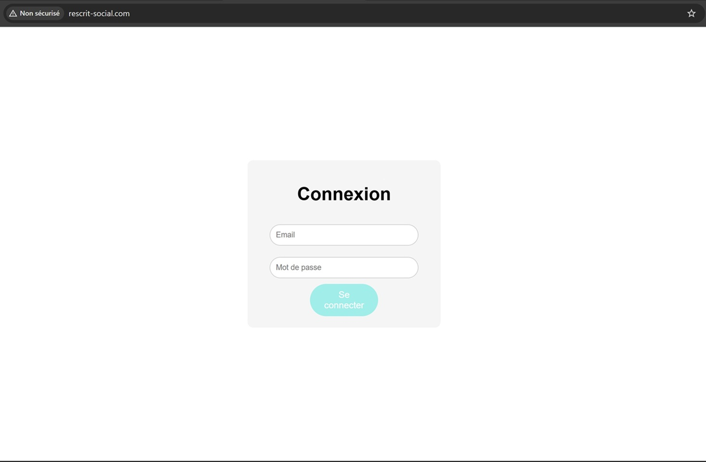
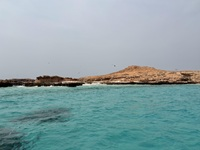
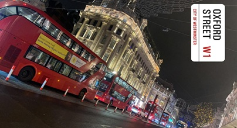

Centres d'Intérêts et Projets
Passionnée d'informatique depuis mon plus jeune âge, le métier d'ingénieure cybersécurité représente pour moi un véritable objectif de vie...
Puissance 4 - TKINTER
Via la spécialité NSI, j'ai eu l'occasion de développer plusieurs petits jeux en Python...
Notemment un puissance 4 avec interface graphique en utilisant la biblioteque TKINTER
Force Brut
Dans le cadre d'un projet scolaire de cybersécurité j'ai réalisé un algorithme de force brut qui simule une attaque en possédant uniquement "l'identifiant bancaire" et qui test ensuite un à un tous les mots de passes possibles jusqu'à trouver le mot de passe numerique associé à cet identifiant "

Experience & Projets
Pour plus de réalisme et afin de presenter mon projet j'ai également réalisé une page web formulaire permettant de se connecter avec un identifiant et un mot de passe. Pour cela j'ai utilisé du HTML, CSS, SQL pour stocker les informations des "utilisateurs" et enfin PHP pour relier ma page web à ma base de données SQL.

Muskat, Oman
J'aime beaucoup voyager et visiter les pays du monde, Notemment ceux du Moyen-Orient car leurs paysages sont divers et les personnes très acceuillantes.

Londres, Angleterre
Ces voyages m'ont permis de développer mon anglais, mon arabe et ma culture personnelle. Ils furent très enreichissants pour moi.

Petra, Jordanie
Visiter l'une des 7 merveilles du monde fut incroyable. J'aimerais toutes les découvrir un jour...
Projets Scolaire & Professionel
Scolaire
Actuellement en BUT R&T Alternance j'aimerais poursuivre en école d'ingenieur afin de me specialiser dans la cyber sécurité. La voix de l'alternance pour cette poursuite d'étude serait idéale pour moi.
Professionel
Je vise une carrière d’ingénieure en cybersécurité, où je pourrais analyser les failles, concevoir des solutions de protection et participer à la défense des systèmes informatiques en entreprise. Mon ambition est d’évoluer vers des postes à responsabilité au sein d’équipes techniques dédiées à la sécurité numérique.